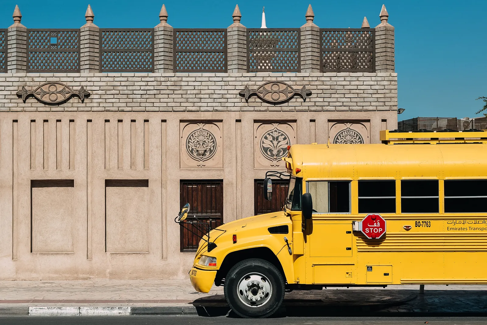

After-school shuttles
Later travel for clubs, tutoring and supervised activities.
Activity transport ↗Clear routes, thoughtful transport planning, and the information families need from pickup to school arrival.

Explore reference routes to understand the journey. Actual schools, stops and availability are confirmed by the operator.
Morning pickup and afternoon return with an assigned stop, a school timetable and a clear collection arrangement.
Daily transportLater travel for clubs, tutoring and supervised activities.
Activity transport ↗Group journeys with passenger, supervision and return plans.
School trips ↗A familiar place, an agreed time.
Wait for the signal, then step aboard.
A coordinated handoff at school.
The same care on the way home.

Understand the checks and routines to discuss with your transport operator.
Keep student, stop, schedule and journey notices together. Explore the parent workspace without signing in.
Open Parent Dashboard
Vehicle suitability depends on passenger capacity, access, maintenance and the route itself. Ask your operator about vehicle checks and any environmental commitments.
Photography is representative stock imagery, not a claim about the KinderRide fleet.
What to ask about the fleet ↗Start with the school, your area and the journeys you need.